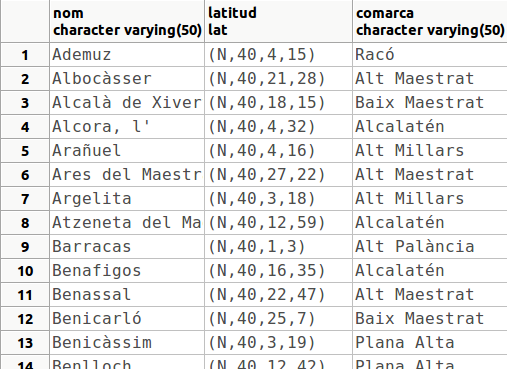
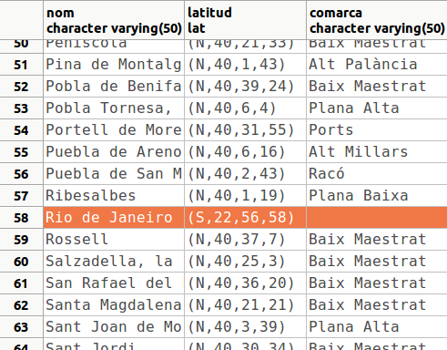

9.1 Operadors
Per a definir un nou operador especificarem el símbol que utilitzarem, el o els operands i la funció que l'implementa.
La sintaxi és:
PROCEDURE = funcname)
[, LEFTARG = lefttype ] [, RIGHTARG = righttype ]
[, COMMUTATOR = com_op ] [, NEGATOR = neg_op ]
...
Hi ha més opcions, que per a la utilitat d'aquest curs obviarem.
- En el nom de l'operador posarem un o més d'un caràcters de la següent llista:
Hi ha algunes limitacions, que podem veure en la documentació.
- Sempre hem de posar la funció que implementa l'operador.
- Si l'operador és d'un únic operand, l'haurem d'especificar (el de la dreta o de l'esquerra, el que preferim). Si és de dos operands s'hauren d'especificar els dos.
- COMMUTATOR indica un altre operador que funciona igual canviant l'ordre dels paràmetres (en numèrics el commutador de < és >)
- NEGATOR indica un altre operador equivalent a negar aquest (en numèrics el negador de < és >=)
Per exemple anem a crear l'operador MÀXIM (/|) que calcula el màxim entre dos números. Utilitzarem la funció MAX2 que ja tenim creada (és l'exercici 7.4)
CREATE OPERATOR /| ( PROCEDURE = MAX2, LEFTARG = numeric, RIGHTARG = numeric);
Podem comprovar el seu funcionament amb la sentència:
SELECT 23 /| 15;Recordem que els operadors estan definits per a determinats operands. Així, per exemple, la següent sentència no funcionarà perquè no tenim definit l'operador per a operands de text:
Per a esborrar un operador utilitzarem la sentència DROP OPERATOR, al qual únicament li haurem d'especificar l'operador a esborrar i entre parèntesis els tipus implicats
DROP OPERATOR /| (numeric, numeric);Tampoc tenim definits els operands de comparació per al tipus lat, que havíem creat. I per tant coses com aquesta no funcionen:
SELECT * FROM POBLACIONS3
WHERE latitud > '(N,40,0,0)';
I si li posem el tipus del qual es tracta:
SELECT * FROM POBLACIONS3
WHERE latitud > '(N,40,0,0)'::lat
ORDER BY nom;potser no funcionen bé. Encara que sembla que va bé la cosa:

el que ha fet en realitat és una comparació caràcter a caràcter
Per a demostrar que no funciona bé inserim una ciutat que estiga a l'hemisferi sud: Rio de Janeiro (ja havíem quedat que no importava si es deteriorava la Base de Dades).
INSERT INTO POBLACIONS3
VALUES('Rio de Janeiro','(S,22,56,58)'::lat, NULL);I si tornem a executar la sentència d'abans:
SELECT * FROM POBLACIONS3
WHERE latitud > '(N,40,0,0)'::lat
ORDER BY nom;ara ja es veu que va malament:

Anem a intentar crear tots els operadors de comparació del tipus lat
Començarem per les funcions. No considerem quan un operand és nul, per fer-los més senzills. La d'igualtat és fàcil, ja que dos latituds són iguals si ho són tots els membres. Observeu que no hi ha problema per fer la comparació $1.h=$2.h, ja que són del domini hemi_lat basat en el tipus caràcter:
CREATE FUNCTION igual (lat,lat) RETURNS bool AS '
BEGIN
RETURN $1.h=$2.h AND $1.g=$2.g AND $1.m=$2.m AND $1.s=$2.s;
END; '
LANGUAGE plpgsql;I ara l'operador:
CREATE OPERATOR =
(LEFTARG = lat,
RIGHTARG = lat,
PROCEDURE = igual,
COMMUTATOR = = ,
NEGATOR = <>);Observeu que hem posat el commutador igual a ell mateix i el negador a l'operador distint, encara que no el tenim definit.
Ara aquesta instrucció ja funciona:
SELECT * FROM POBLACIONS3
WHERE latitud = '(N,39,59,10)';i fins i tot sap que ha de convertir a lat la cadena de caràcters (ja que només té un operador = amb un operand tipus lat).
La funció distint només ha de negar l'igual. I ja podem gastar l'operador:
CREATE FUNCTION distint (lat,lat) RETURNS bool AS '
BEGIN
RETURN NOT ($1 = $2);
END; '
LANGUAGE plpgsql;CREATE OPERATOR <>
(LEFTARG = lat,
RIGHTARG = lat,
PROCEDURE = distint,
COMMUTATOR = <> ,
NEGATOR = = );Nota important
Enguany tenim creades moltes Bases de Dades perquè l'alumnat és molt extens, i potser tenim un poc saturat el servidor.
Siga per l'anterior o per alguna altra causa, estem detectant una sobrecàrrega entre les crides als operadors nous que estem creant.
Per aquesta raó, encara que queda molt clara la funció distint (quan no són iguals), en compte d'utilitzar l'operador = serà millor cridar a la funció igual (en definitiva, l'operador = crida a la funció igual, per tant ens estalviem un pas). Com que anirem fent tots els operadors de comparació, si cridem sempre a les funcions i no a altres operadors, al final ens estalviarem molts passos.
Per això, millor fer aquesta versió de la funció distint(lat,lat)
CREATE OR REPLACE FUNCTION distint(lat, lat) RETURNS bool AS $cos$
BEGIN
RETURN NOT igual($1,$2);
END;
$cos$ LANGUAGE plpgsql;L'operador major és un poc més complicat. Hem de considerar una latitud major si està més al nord. Per tant a l'hemisferi nord quan més graus més al nord, però a l'hemisferi sud és al revés.
CREATE FUNCTION major (lat1 lat, lat2 lat) RETURNS bool AS $cos$
DECLARE
aux bool;
BEGIN
IF lat1.h='N' AND lat2.h='S' THEN aux := TRUE;
ELSIF lat1.h='S' AND lat2.h='N' THEN aux := FALSE;
ELSIF lat1.h='N' AND lat2.h='N' THEN -- Hemisferi NORD
IF lat1.g > lat2.g THEN aux := TRUE;
ELSIF lat1.g < lat2.g THEN aux := FALSE;
ELSE
IF lat1.m > lat2.m THEN aux := TRUE;
ELSIF lat1.m < lat2.m THEN aux := FALSE;
ELSE
IF lat1.s > lat2.s THEN aux := TRUE;
ELSE aux := FALSE; -- si són iguals és fals
END IF;
END IF;
END IF;
ELSE -- Hemisferi SUD, al revés que al NORD
IF lat1.g < lat2.g THEN aux := TRUE;
ELSIF lat1.g > lat2.g THEN aux := FALSE;
ELSE
IF lat1.m < lat2.m THEN aux := TRUE;
ELSIF lat1.m > lat2.m THEN aux := FALSE;
ELSE
IF lat1.s < lat2.s THEN aux := TRUE;
ELSE aux := FALSE;
END IF;
END IF;
END IF;
END IF;
RETURN aux;
END; $cos$
LANGUAGE plpgsql;Segurament podria haver quedat més curt, però així crec que s'entén molt bé. Ara l'operador:
CREATE OPERATOR >
(LEFTARG = lat,
RIGHTARG = lat,
PROCEDURE = major,
COMMUTATOR = < ,
NEGATOR = <= );Podríem provar-lo així:
SELECT * FROM POBLACIONS3
WHERE latitud > '(N,40,0,0)'
ORDER BY NOM;i podrem comprovar que Rio de Janeiro no apareixerà.
Afortunadament tots els altres operadors es poden derivar dels que ja tenim:
CREATE OR REPLACE FUNCTION major_igual (lat,lat) RETURNS bool AS '
BEGIN
RETURN ($1 > $2) OR ($1=$2);
END; ' LANGUAGE plpgsql;CREATE OPERATOR >=
(LEFTARG = lat,
RIGHTARG = lat,
PROCEDURE = major_igual,
COMMUTATOR = <= ,
NEGATOR = < );I el menor seria negant el major o igual i el menor o igual negant el major.
Nota important
Per la mateixa raó de la nota anterior, millor fer aquesta versió de la funció major_igual(lat,lat):
CREATE OR REPLACE FUNCTION major_igual (lat,lat) RETURNS bool AS '
BEGIN
RETURN major($1,$2) OR igual($1,$2);
END; ' LANGUAGE plpgsql;I exactament igual amb les funcions menor(lat,lat) i menor_igual(lat,lat)
Llicenciat sota la Llicència Creative Commons Reconeixement NoComercial CompartirIgual 3.0